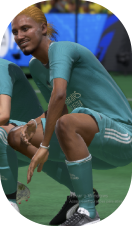

2M Club
O maior time de Pro Clubs do mundo

Quais os títulos e feitos?
1. Jogadores que amam e honram a camisa e jogam no club desde o seu nascimento.
2. Mais de 2000 gols somados apenas dos centro-avantes.
3. Exatas 14 Bolas de ouro dentro do time e mais de 10 chuteiras de ouro.
4. 20 Titulos da primeira divisão e 15 copas.
Vaz
João Vaz
Nosso centro-avante camisa 10! Mais
de 1200 gols, 1000 assistências e 8 Ballon d'Or. Cresceu jogando no
2M juntamente com Careca e o extinto Mano Brown. Também conhecido
como: 10 da gávea ou Embaixador da bola parada.
Sobre Nós
Conheça os nossos
jogadores!
Careca
Cleiton Careca
O Capitão, 9 e Matador do
time, com um acomulado de 6 chuteiras de ouro. Careca desde pequeno
é apaixonado pelo 2M, na qual começou na base com Vaz e o falecido
Mano Brown. Também conhecido como: 9 do Fogão, É o giras,
Homelander.
Sobre Nós
Conheça os nossos
jogadores!
Indiano

Indiano
É o 7 do time, nosso maestro e
Pastor-Alemão (título que ganhou na cadeia), chegou ao 2m de
empréstimo e conquistou o coração de todes integrantes devido a sua
classe em campo, fazendo assim o time ser obrigado a compra-lo.
Também conhecido como: 7 Do Fluzão, Carvão.
Sobre Nós
Conheça os nossos
jogadores!
Gomes

João Gomes
Claramente o jogador mais marcante
do time, nosso meia e camisa 11! Gomes foi achado jogando bola na
lama por Careca, na qual se sentiu encantado e o chamou para jogar
profissionalmente. É o pitbull mais adorado da torcida, Também
conhecido como: 11 da Colina ou Gorila.